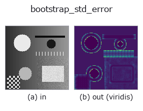

texture op• Datenarten: image → image
• Aufruf: fullseye.apply(img, "bootstrap_std_error", a=0.5, b=0.5) (das 2-D-Modell ist ein Bild plus zwei skalare Regler a,b∈[0,1])

*Die Abbildung ist die tatsächliche Ausgabe auf einer synthetischen 128×128-Eingabe. Links Eingabe, rechts Ausgabe. Punktwolken als Draufsicht-Streudiagramm (Helligkeit = z), 1-D-Reihen als Linie, Volumen als Maximum-Projektion entlang z, Videos als mittleres Bild, komplexe Bilder als Betrag; Rückgabewerte, die kein Bild ergeben, werden als Werte gezeigt.*
*Die Ausgabe ist in einer viridis-artigen Falschfarbe dargestellt (dunkles Violett = klein, Gelb = groß), damit ein Feld von Größen — Abstand, Phase, Orientierung, Tiefe — lesbar ist.*
Regler a durchfahren (0,1 / 0,5 / 0,9, der andere Regler auf Standard):
▸ bootstrap_std_error: knob a sweep (docs site)
Regler b durchfahren (0,1 / 0,5 / 0,9, der andere Regler auf Standard):
▸ bootstrap_std_error: knob b sweep (docs site)
Auf anderen Bildern (synthetische Szene / Foto / Münzen. Obere Reihe: Eingaben, untere Reihe: deren Ausgaben. Regler auf Standard):
▸ bootstrap_std_error: other inputs (docs site)
*Die 4. Spalte ist eine Farb-Eingabe (H,W,3). Dieser Op verarbeitet Farbe, ohne Kanäle zu vermischen (er faltet den Farbkanal nicht als dritte Raumachse).*
> Für diesen Operator gibt es noch keine Übersetzung. Es folgt der Originaltext unverändert.
局所標準偏差の標準誤差を、分布を仮定せずに測る(ブートストラップ)。
`local_std が併記する誤差 1/sqrt(2(n-1))` は雑音が正規分布という仮定の
上に立っている。外れ値や二峰性があると、その式は本当のばらつきを過小に言う。
ここでは窓の中の値をそこから重複ありで取り直して統計量を作り直し、その散らばり
そのものを誤差とする —— 仮定が要らない代わりに計算で買う。
`a が窓(3〜9 画素)、b` が取り直しの回数(8〜64)。出力は窓内の標準偏差に
対する相対標準誤差で、`1.0` が「100 % ぶれる」。
読み方: 絶対値ではなく、場所ごとの比で読む。正規分布の白色雑音に当てると
閉形式 `1/sqrt(2(n-1))` より低めに出る(ブートストラップは小標本で標準偏差の
ばらつきを過小に言う)。実測(`b=1.0`、取り直し 64 回):
窓 3x3 (n=9) 実測 0.216 / 閉形式 0.250 = 0.86
窓 5x5 (n=25) 実測 0.133 / 閉形式 0.144 = 0.92
窓 7x7 (n=49) 実測 0.096 / 閉形式 0.102 = 0.94
窓 9x9 (n=81) 実測 0.076 / 閉形式 0.079 = 0.96
つまり窓が大きくなるほど近づく。読みどころは「どこが周りより高いか」で、
そこは分布が正規から外れている(傷・外れ値・二つの材質の境目)。外れ値を 2 % 混ぜた
画像では中央値が閉形式の 1.8 倍まで跳ね上がり、正規の場合(0.9 倍前後)と
はっきり分かれる —— この差が使いどころ。`local_std` と並べて、「ばらつきの
大きさ」と「その数字の信用できなさ」を同時に見る。
適用条件: (1) 窓が小さいとブートストラップ自体がぶれるうえ、上のとおり
系統的に低く出る。(2) 取り直し回数(`b`)を増やすと地図は滑らかになるが、
真の誤差が下がるわけではない。(3) 決定的にするため種は固定してある —— 同じ入力なら
必ず同じ出力を返す。(4) 仮定を計算で買う opなので遅い: 実測で 128x128 が
0.26 秒、256x256 が 1.27 秒(`b=1.0`、64 回)。閉形式で足りる場面では
`local_std` の誤差限界を使うこと —— この op は「その閉形式が信用できるか」を
確かめたいときの道具。
• Leitfaden zur Familie gallery2d_texture_freq
• Katalog der Beispieldaten (Download-URLs / Lizenzen) — 2-D nutzt skimage.data (BSD/Public Domain) plus synthetische Bilder, 3-D nennt Download-URLs echter Datenquellen (Stanford, PDS, …).
• Herkunft und Literatur der Operatoren — die Quellen der Forschung/Verfahren, auf denen diese Operatorfamilie beruht.
• Der kanonische Algorithmus (Autor, Jahr) und seine Anwendungen stehen im Familienleitfaden oben.
Das Programm unten ist nachweislich lauffähig (gleiche Eingabe wie die Abbildung). In der Studio-Hilfe wird dieser Block zu Schaltflächen, die es sofort laden und ausführen.
bootstrap_std_error 0.50 0.50
▸ Load this pipeline · Load & run
• gallery2d_texture_freq — py -3.11 examples/gallery2d_texture_freq.py
image als Eingabe)identity · gaussian · mean_box · bilateral · unsharp · median · min_filter · max_filter
texture)std_filter · local_std · scale_select_std · structure_tensor_orientation · structure_tensor_coherence · gabor · sk_frangi · sk_meijering
*Provenance: ops.py — 2D Operator-Registry. Diese Notiz wird von tools/opdocs.py md erzeugt (nicht von Hand bearbeiten).*
© 2026 Kazufumi Furuse — Fullseye operator documentation. Licensed under Apache-2.0.
{kind=link}
{kind=link}
{kind=link}